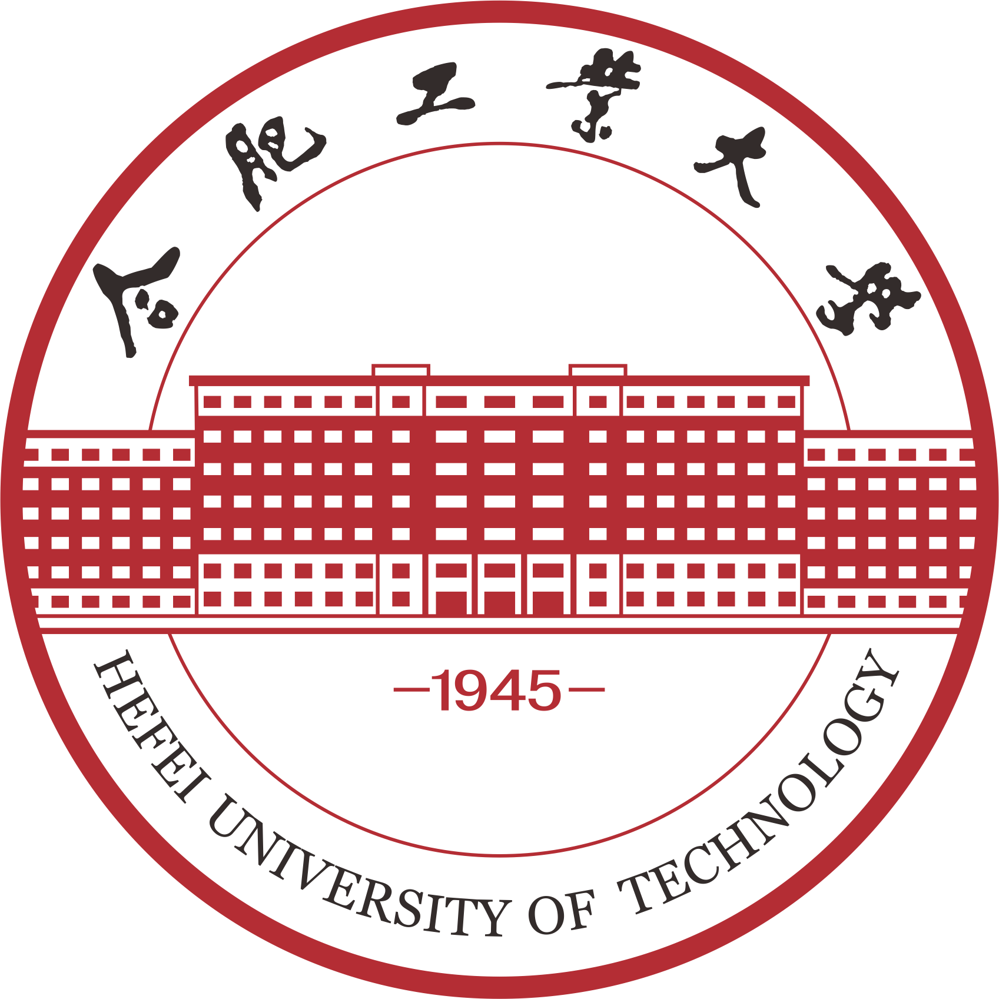
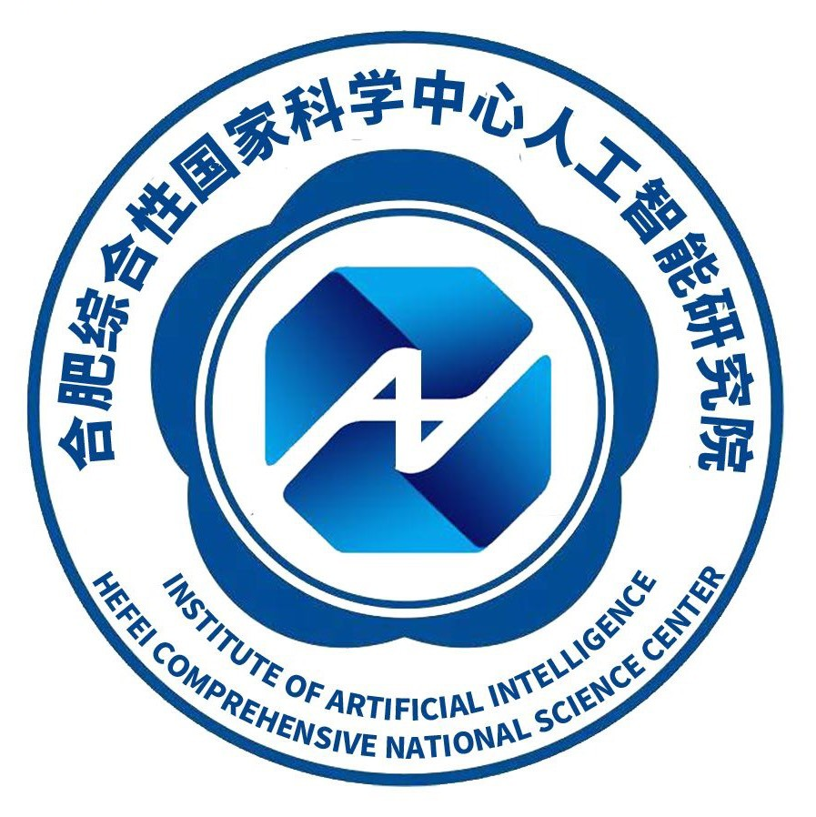

崔丰麒 (Fengqi Cui)
.jpg) |
本科（大三在读） |
个人简介
我目前在合肥工业大学情感计算与先进智能机器安徽省重点实验室MAC-Lab课题组进行助研，在中国科学技术大学先进技术研究院（合肥综合性国家科学中心人工智能研究院）普适心理计算实验室实习，师从孙晓教授。
我的研究兴趣主要包括: 深度学习, 情感计算, 普适心理计算, 边缘计算 等。
教育经历
|  | 合肥工业大学 |本科 (2020.9 ~ now)
|
实践经历
|  | 合肥综合性国家科学中心人工智能研究院普适心理计算实验室 |实习(2022.9 ~ now)
|
百度飞桨（PaddlePaddle） |开源共建(2022.7 ~ now)
|
科研情况
于2021年9月加入合肥工业大学情感计算与先进智能机器安徽省重点实验室进行助研，目前在中国科学技术大学先进技术研究院普适心理计算实验室实习，师从孙晓教授，进行情感计算、普适心理计算、计算机视觉相关领域的研究， 目前主要研究方向为静态表情识别、时序动态微表情识别、多模态情感计算、神经网络结构优化与硬件加速 等，目前在著论文两篇、受理专利三项、获教育部排行榜赛事奖项近20项，主持项目获得国家级大学生创新创业训练计划立项，并获得科技局5万元创新创业基金支持，且入选合肥市种子基金候选项目库。
国家级大学生创新创业训练计划：基于多模态情感计算与FPGA硬件加速的车载心理干预系统（排序1）
针对因“路怒症”等危险驾驶状态引发的道路交通事故起数呈逐年上升，中国司机心理障碍的发生率高等社会问题；与完善智能汽车生态建设体系，构建具有良好人机交互功能的情感智能座舱等企业需求，团队通过整合中国科学技术大学先进技术研究院普适心理计算团队、合肥工业大学情感计算与先进智能机器安徽省重点实验室软硬件相关的优势资源，开发出了一套结合了边缘端硬件加速与多模态情感计算的车载嵌入式情绪识别与心理干预系统，可实现通过无接触式采集驾驶员的微表情、心电等多模态信号进行实时的情绪分类，并及时对危险心理状态进行干预，为驾驶员的行车安全与心理健康保驾护航。
专利（受理）：基于并行复用的卷积神经网络的硬件加速器及并行复用方法 [发明]（排序4）
本发明公开了一种基于并行复用的卷积神经网络的硬件加速器及并行复用方法，该硬件加速器包括：参数存储模块、REG‑FIFO模块、计数控制模块、输入复用的卷积运算模块、激活模块、池化层模块；其中，参数存储模块负责预存图片参数和练后的权值参数；REG‑FIFO模块负责生成与卷积核相匹配的输入矩阵以及读取矩阵数据；计数控制模块负责时钟周期计数并依此控制REG‑FIFO模块的输入输出；输入复用的卷积运算模块负责卷积层与全连接层的卷积运算；激活模块负责卷积层和全连接层的输出激活操作；池化层模块负责经激活后的卷积层输出的池化操作。本发明旨在实现高运算并行度、高度数据复用、低硬件复杂度的卷积神经网络计算。
学生工作
合肥工业大学电子科技协会 |会长（2021.07 ~ 2022.07）
年度十佳学生组织负责人，在任期间面向全校开展新生的C语言编程及单片机、机器学习的入门培训工作，主讲课程为机器学习。协助协会指导教师戴雷副教授进行2022电赛的培训工作、学生工作。作为负责人组织二十余次校级、院级活动。
百度校园松果人工智能人才培养菁英班 |班长（2022.04 ~ now）
推动百度松果菁英班与助研实验室达成合作并于校内落地，同时协助百度企业导师与校内导师孙晓教授开展菁英班的管理、建设工作，并在学生培训工作中担任助教。
合肥工业大学百度飞桨领航团 |团长（2022.07 ~ now）
“从零到一”创建合肥工业大学飞桨领航团，以飞桨推广和应用为核心，面向未来AI开发者，通过组织AI趣味游戏、AI知识竞赛、AI主题讲座、实操项目挑战赛、AI项目体验等多种活动形式让开发者了解飞桨、应用飞桨，从而提高飞桨领航团的活跃成员规模、夯实飞桨领航团人工智能及深度学习背景知识，助力学校人工智能体系培养建设。任职期间，领航团活跃规模100+人次，产出“互联网+”大赛百度产业赛道国赛银奖等一系列奖项。